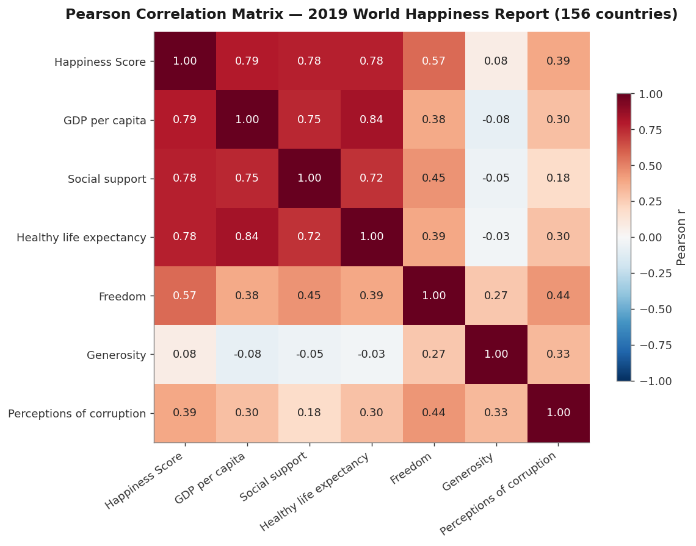
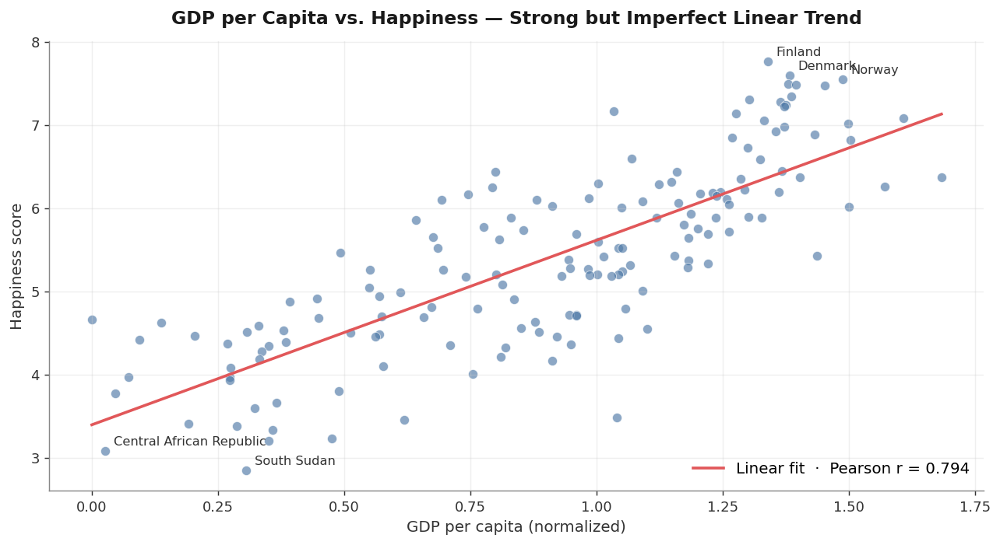
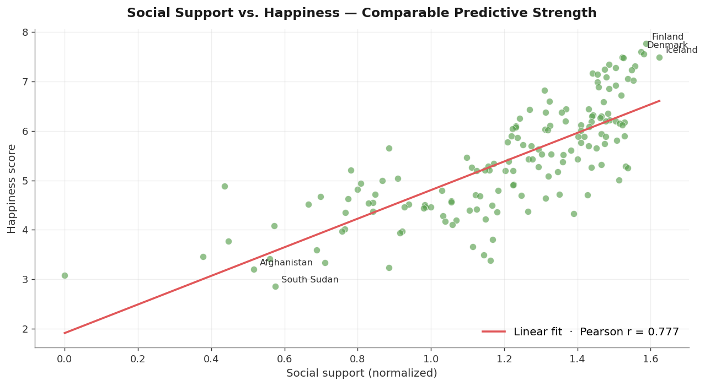
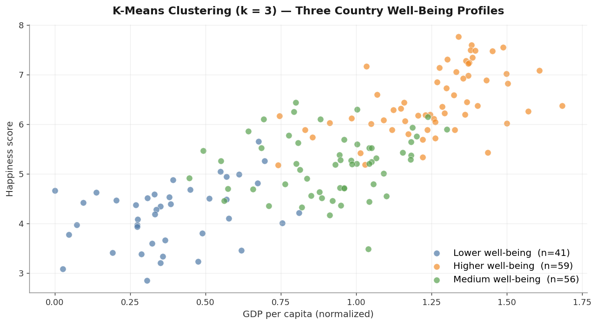
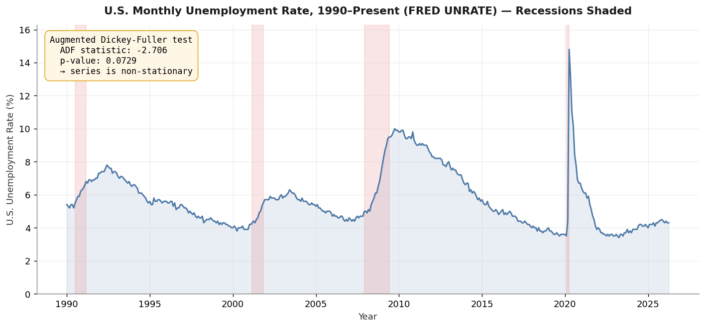

Datensatz: World Happiness Report 2019 — 156 Länder, 9 Spalten (Rang, Land, Happiness-Score sowie 6 sozioökonomische Prädiktoren). Ergänzend US-Arbeitslosenquote von FRED (UNRATE, monatlich) zur Demonstration von Zeitreihen-Methoden.
Ergebnis: Querschnittsanalyse mit Korrelation und Regression, K-Means-Clustering (k = 3) zu Wohlbefindens-Profilen sowie eine separate Zeitreihen-Demonstration mit FRED-Arbeitslosendaten inklusive ADF-Stationaritätstest und Autokorrelations-Diagnostik.
Projektüberblick
Der World Happiness Report 2019 listet 156 Länder mit einem selbstberichteten Happiness-Score und sechs sozioökonomischen Variablen — BIP pro Kopf, soziale Unterstützung, gesunde Lebenserwartung, Freiheit, Großzügigkeit und Wahrnehmung von Korruption. Die Analyse kombiniert Korrelation, univariate Regression und K-Means-Clustering, um zu prüfen, welche Kombinationen tatsächlich glücklichere von weniger glücklichen Ländern trennen.
Eine separate Zeitreihen-Demonstration auf US-Arbeitslosendaten (FRED UNRATE, monatlich) ist als methodisches Exponat enthalten — der Happiness-Datensatz ist ein Querschnitt (ein Wert pro Land), daher braucht es einen anderen Datensatz, um Zeitreihen-Werkzeuge wie ADF-Tests und Autokorrelation zu demonstrieren.
Hypothesen: H1 — Höheres BIP pro Kopf korreliert mit höherer Zufriedenheit. H2 — Soziale Unterstützung ist positiv mit Zufriedenheit assoziiert. H3 — Gesunde Lebenserwartung ist positiv mit Zufriedenheit assoziiert.
Daten-Pipeline
| Schritt | Tool | Aktion |
|---|---|---|
| 01 | Pandas | WHR-2019 geladen (156 Länder × 9 Spalten). Validiert: alle 6 Prädiktoren sind float64, keine fehlenden Werte. |
| 02 | Pandas | Die 6 numerischen Prädiktoren plus Happiness-Score für die weitere Analyse ausgewählt. Identifikator-Spalten (Rang, Land) ausgeschlossen. |
| 03 | NumPy · Seaborn | Pearson-Korrelationsmatrix über die 7 numerischen Variablen berechnet und als Heatmap dargestellt. |
| 04 | SciPy · Matplotlib | Univariate lineare Regression: Happiness ~ BIP, Happiness ~ soziale Unterstützung. Scatterplots mit Regressionslinie und Pearson-Koeffizient. |
| 05 | scikit-learn | Die 4 stärksten Prädiktoren mit StandardScaler normiert und mit K-Means (k = 3) zu Wohlbefindens-Profilen geclustert. |
| 06 | statsmodels | Zeitreihen-Exponat: monatliche US-Arbeitslosenquote von FRED geladen, ADF-Stationaritätstest durchgeführt, Autokorrelation auf differenzierter Reihe geplottet. |
| 07 | Tableau | Globale Choroplethenkarte des Happiness-Scores 2019 in Tableau Public erstellt. |
Korrelationsstruktur
Die Korrelationsmatrix ist die klarste Zusammenfassung. BIP pro Kopf, soziale Unterstützung und gesunde Lebenserwartung korrelieren jeweils mit Zufriedenheit im Bereich 0,77–0,79 — eng genug, dass keiner dieser Faktoren die anderen dominiert. Freiheit liefert ein moderates Signal (r ≈ 0,57); Korruptionswahrnehmung ein schwächeres (r ≈ 0,39); Großzügigkeit ist praktisch unkorreliert (r ≈ 0,08).

Key Insight — BIP, soziale Unterstützung und Lebenserwartung sind etwa gleich stark
Die drei stärksten Prädiktoren korrelieren mit Zufriedenheit fast identisch (≈0,78). Sie sind zudem untereinander hoch korreliert (≈0,72–0,84), teilen also einen großen Teil ihres Erklärungssignals. Die univariaten Regressionen in dieser Analyse können nicht trennen, welcher dominiert — das bräuchte eine multivariate Regression und liegt außerhalb des Projektumfangs.
BIP pro Kopf und Zufriedenheit
Der bivariate Zusammenhang ist stark positiv: wohlhabendere Länder berichten höhere Zufriedenheits-Scores. Der Pearson-Koeffizient ist r = 0,794, der höchste der sechs Prädiktoren. Der Scatterplot zeigt jedoch deutliche Streuung innerhalb gleicher BIP-Bänder — Länder mit ähnlichem BIP erreichen merklich unterschiedliche Happiness-Werte, was die Betrachtung weiterer Faktoren motiviert.

Soziale Unterstützung und Zufriedenheit
Soziale Unterstützung — der Anteil der Befragten, die im Notfall auf jemanden zählen können — korreliert mit Zufriedenheit bei r = 0,777, bei n = 156 statistisch nicht unterscheidbar vom BIP. Der Scatter hat eine ähnliche Form: klarer positiver Trend mit erheblicher Restvarianz.

Key Insight — Soziale Unterstützung ist gleichrangig, nicht dominant
Eine frühere Version dieser Analyse behauptete, soziale Unterstützung sei ein "stärkerer und konsistenterer" Prädiktor als das BIP. Die Daten stützen das nicht. Die beiden Korrelationen (0,794 vs. 0,777) liegen zu nah beieinander, um ohne multivariate Analyse eine Hierarchie zu erklären — und eine solche wurde im Projekt nicht durchgeführt. Die ehrliche Lesart: beide zählen, ungefähr gleich stark.
Globale Happiness-Karte
Die Choroplethenkarte des Happiness-Scores 2019 macht das geografische Muster auf einen Blick sichtbar. Nordeuropa und Nordamerika schneiden am höchsten ab; Subsahara-Afrika und Teile Südasiens am niedrigsten. Innerhalb der meisten Regionen bleibt erhebliche Streuung.

K-Means-Clustering — Wohlbefindens-Profile
Um über paarweise Beziehungen hinauszugehen, wurden die vier stärksten Prädiktoren (BIP, soziale Unterstützung, Lebenserwartung, Freiheit) normiert und an K-Means mit k = 3 übergeben. Die resultierenden Cluster segmentieren Länder sauber entlang der BIP-Happiness-Diagonale:

Key Insight — Drei kohärente Profile aus dem multivariaten Raum
Das multivariate Clustering ergibt drei etwa gleich große Gruppen, die sauber auf die umgangssprachlichen Kategorien "niedrig", "mittel" und "hoch" abbilden. Die Cluster tragen Information, die keine einzelne paarweise Korrelation einfängt — sie spiegeln die gemeinsame Struktur der vier normierten Dimensionen wider.
Zeitreihen-Methodik-Exponat
Der Happiness-Datensatz ist ein Querschnitt — eine Zeile je Land, ein Jahr. Um Zeitreihen-Methoden zu demonstrieren, enthält das Modellierungs-Notebook ein separates Exponat zur monatlichen US-Arbeitslosenquote (FRED UNRATE, 1990–heute). Es ist bewusst nicht mit der Happiness-Analyse verschmolzen; es zeigt nur, wie sich der Ansatz ändert, wenn die Daten zeitlich geordnet sind.

Wichtigste Erkenntnisse
Erkenntnis 1 — BIP pro Kopf ist der einzelne stärkste Korrelat (r = 0,794).
Wohlhabendere Länder berichten höhere durchschnittliche Zufriedenheit — der grundlegende Einkommens-Glücks-Zusammenhang bestätigt sich; BIP allein erklärt rund 63 % der Varianz zwischen Ländern.
Erkenntnis 2 — Soziale Unterstützung und Lebenserwartung sind gleichrangig, nicht stärker.
Pearson-Korrelationen: BIP 0,794, Lebenserwartung 0,780, soziale Unterstützung 0,777. Bei n = 156 statistisch nicht unterscheidbar; zudem untereinander stark korreliert (r ≈ 0,72–0,84). Eine Entflechtung würde eine multivariate Regression erfordern.
Erkenntnis 3 — Großzügigkeit ist praktisch unkorreliert mit nationaler Zufriedenheit (r ≈ 0,08).
Im Rahmen von WHR-2019 trägt die Großzügigkeits-Variable kaum Signal für den Happiness-Score, auch wenn sie moderat mit Freiheit und Korruptionswahrnehmung korreliert.
Erkenntnis 4 — K-Means ergibt drei kohärente Wohlbefindens-Profile.
Normierung der vier stärksten Prädiktoren und Clustering bei k = 3 ergibt die Gruppen Niedriger (41), Mittlerer (56) und Höherer (59) Wohlbefinden, die sich entlang der BIP-×-Happiness-Diagonale ausrichten und multivariate Information über jede einzelne Korrelation hinaus tragen.
Einschränkungen
- Einjahres-Schnappschuss — kein zeitlicher Trend für Zufriedenheit ableitbar.
- Korrelation impliziert keine Kausalität; die Analyse ermittelt Assoziationsstärken, keine Wirkrichtungen.
- Die Regressionen in diesem Projekt sind univariat; relative Beiträge korrelierter Prädiktoren sind ohne multivariates Modell nicht trennbar.
- K-Means mit k = 3 ist explorativ — alternative k-Werte und Clustering-Methoden würden die Segmentierung verfeinern.